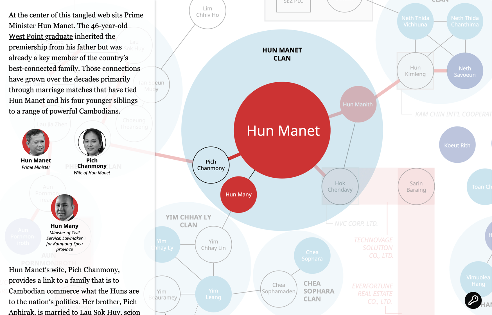

This project explores the intricate web of relationships and power dynamics within Cambodia's government, exposing the pervasive issue of nepotism in the newly formed cabinet in 2023.
A screenshot of the first stop in the web of nepotism featuring Hun Manet and his family members. (Amanda Weisbrod / RFA)
The investigative unit at RFA first approached me with the concept of producing a static graphic to show the nepotism within Cambodia’s newly elected cabinet in early August of 2023. After some thought, I approached my supervisors about creating an interactive graphic instead, so that readers would have an easier time digesting the complex visual information. I had never created anything like this before, but they agreed to give me the chance to try.
I designed the main graphic in Adobe Illustrator before exporting it as an SVG file then translating it to HTML and CSS. I met with the investigative unit frequently to discuss the flow of the story, and how the graphic should reflect the content as the user scrolled through.
Once we had a plan, I used Javascript to tie the animations to the user’s scroll position. Google search, W2W schools, Codecademy and ChatGPT were immensely helpful in teaching me what I needed to know in order to bring what I saw in my mind’s eye to life.
I was inspired by an interactive graphic page produced by The New York Times. Their use of scrolling text boxes overlaid on top of an animated graphic was perfect for our purposes, so I looked up tutorials on how to do the same.
Programs used: Adobe Illustrator, Adobe Photoshop, HTML, CSS, JavaScript, Visual Studio Code, GitHub
Left: Mapping out the connections in Cambodia's government with RFA's Investigative Unit. Right: First round sketches of the interactive graphic layout. (Amanda Weisbrod / RFA)
First and second drafts of the interactive graphic layout. (Amanda Weisbrod / RFA)
Click here to view the published project.